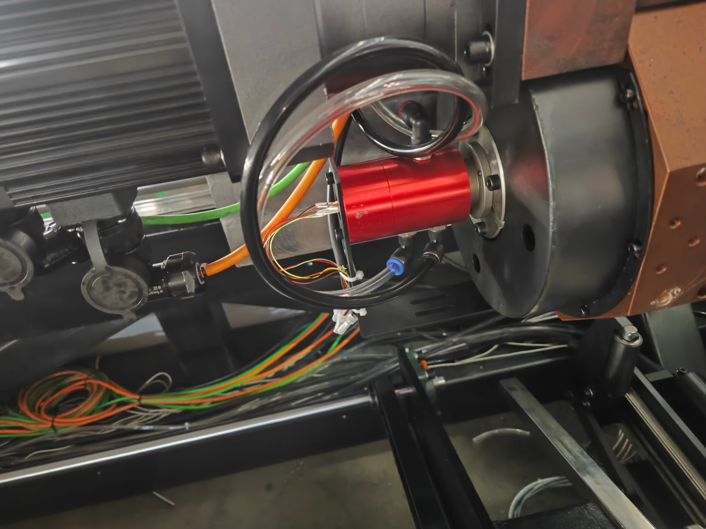
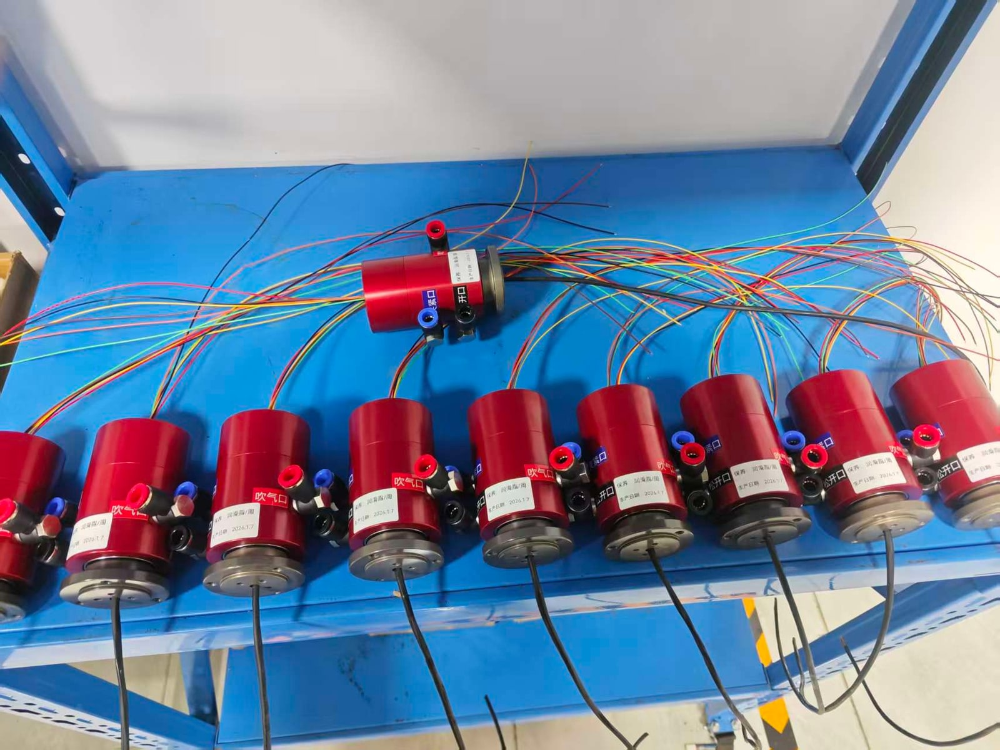

BP-3P-S06-0001: передача сжатого воздуха и сигналов в пневматическом патроне с контролем по датчикам
В этой конфигурации заказчика три независимых канала сжатого воздуха и сигналы внешних датчиков передаются между неподвижной и вращающейся сторонами пневматического патрона.
Краткое описание
| Параметр | Данные применения |
|---|---|
| Изделие | BP-3P-S06-0001 |
| Применение | Пневматический патрон с контролем по датчикам |
| Пневмофункции | Зажим, разжим и обдув в этой установке |
| Электрическая функция | Передача сигналов внешних датчиков через вращающийся интерфейс |

Установка в узле патрона
На цеховой фотографии видно пневматическое вращающееся соединение на узле патрона, а также пневмотрубки и электрические провода у вращающегося интерфейса.
Задача узла
BP-3P-S06-0001 создаёт раздельные пути для сжатого воздуха и электрических сигналов. Наличие заготовки и состояние зажима определяются внешними датчиками и системой управления станка; само вращающееся соединение этих функций не выполняет.
Детали установки
- Пневмоэлектрический вращающийся интерфейс установлен в узле патрона.
- К установленному устройству подведены пневмотрубки и электрические провода.
Нажмите на фотографию, чтобы открыть JPG в полном разрешении.

Подготовка партии и электрических выводов
Вторая фотография показывает несколько устройств с обозначенными пневмопортами и выведенными наружу электрическими проводами до установки.
Производственные контрольные точки
- Обеспечить соответствие каждого пневмопорта карте контуров заказчика.
- До подключения проверить утверждённую распиновку и тип сигнала.
- Не допускать натяжения трубок и проводов, чрезмерно малых радиусов изгиба и контакта с вращающимися деталями.
Функции каналов в этой установке
Эти назначения относятся к данной установке. Подключения согласуются со схемой пневмоканалов и электрической схемой конкретного патрона.
| Канал передачи | Назначенная функция | Реализация функции |
|---|---|---|
| Пневмоканал | Зажим | Механизм патрона выполняет зажим. |
| Пневмоканал | Разжим | Механизм патрона выполняет разжим. |
| Пневмоканал | Обдув для удаления пыли или стружки | Расположение сопла, расход и время обдува определяются конструкцией станка. |
| Канал передачи электрического сигнала | Контроль наличия заготовки или положения «зажато» | Функцию обнаружения выполняют внешние датчики, а логику — контроллер станка. |
Проверки при интеграции
Для аналогичной установки направьте схему пневмоканалов, условия работы, чертёж патрона и требования к электрическим сигналам. Конфигурация будет согласована до производства.
| Проверка | Исходные данные | Цель |
|---|---|---|
| Карта пневмоканалов | Функция, среда, давление и расход каждого канала | Подтвердить независимость каналов и правильность назначения портов по схеме заказчика. |
| Условия работы | Скорость вращения, рабочий цикл и условия окружающей среды | Подтвердить пригодность для реальных условий станка. |
| Монтажные размеры и крепление | Чертёж патрона, доступный монтажный объём и прокладка трубок | Проверить размеры, соосность, радиусы изгиба и зазоры. |
| Электрический интерфейс | Число цепей, напряжение, ток, тип сигнала, экранирование и распиновка | Подобрать конфигурацию токосъёмника под систему управления. |
| Датчики и безопасность | Тип датчика, критерии наличия детали и состояния зажима, логика контроллера | Проверить работу внешних датчиков отдельно от вращающегося соединения и выполнить оценку безопасности на уровне станка. |
Обсудите с Begapunk интеграцию патрона с контролем по датчикам
Направьте чертёж патрона, функции каналов, условия работы и требования к электрическим сигналам для проверки конкретной конфигурации.